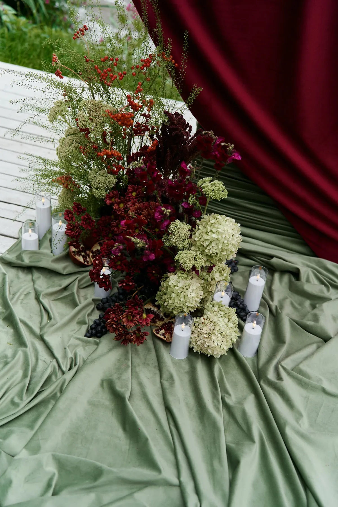
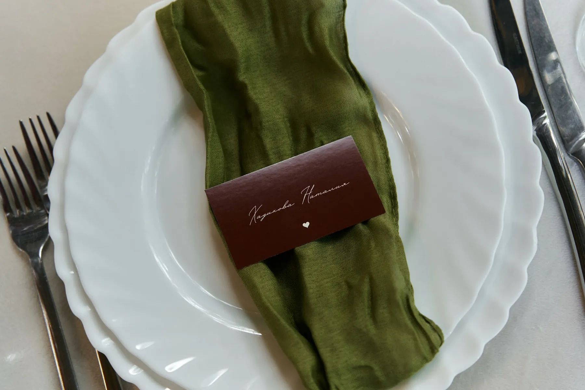
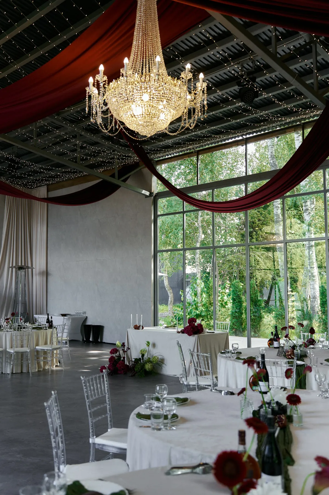
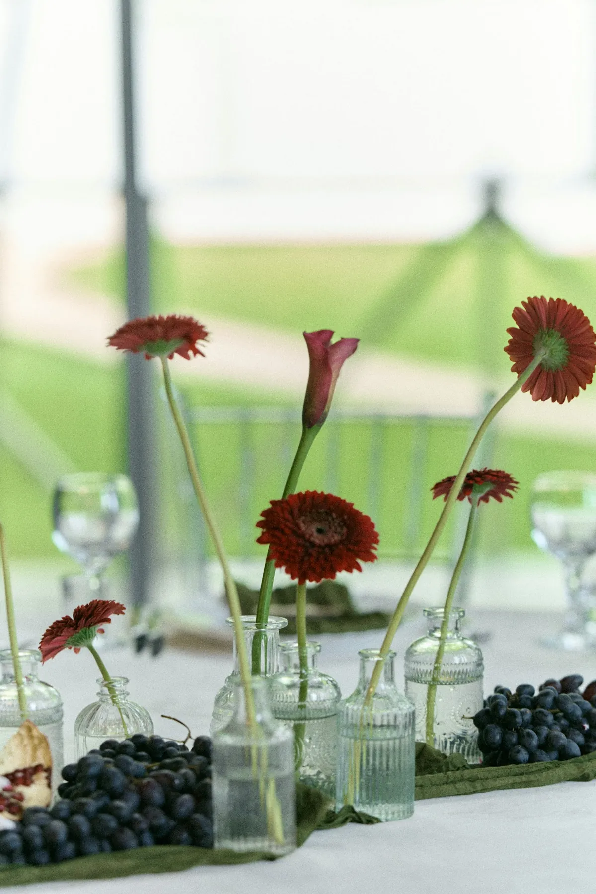
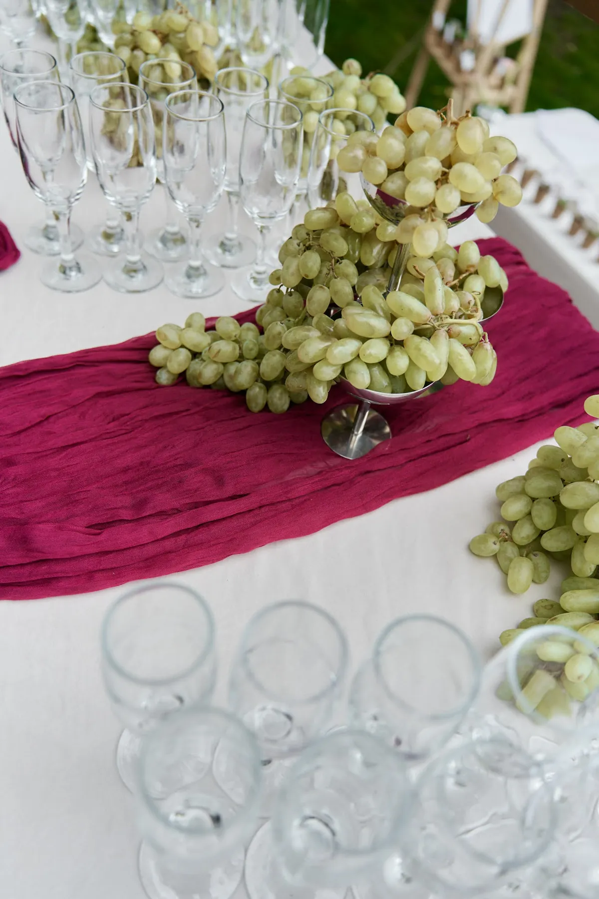

Бордо — цвет вечера, бархата и свечей. Он выглядит дорого, но легко делает зал тяжёлым и тёмным. Разбираем, как работать с этой палитрой: чем «разбавлять», где ставить акценты и какие фактуры выбирать, — на примере нашей бордовой свадьбы у воды.
Какое бордо выбрать
Бордовая гамма — это целый спектр: винный, вишнёвый, гранатовый, оттенки ближе к малиновому. Выбирайте один основной оттенок и держитесь его: два «разных бордо» рядом выглядят случайно. Смотрите на цвет при дневном и при вечернем свете — вечером бордо заметно темнеет.
С чем сочетать бордо
С шалфеем и оливковым. Приглушённая зелень «успокаивает» насыщенный цвет и делает палитру природной. Именно так мы собрали свадьбу «Бордовое сердце у воды»: бордо, шалфейный текстиль и тёмная зелень.
С молочным и белым. Светлая база — скатерти, часть цветов — не даёт залу потемнеть и оставляет место для света.
С красным. Если хочется ярче и торжественнее, красный бархат на фоне оливкового текстиля даёт контраст — как в свадьбе «Красный бархат и зелень».


Фактуры: бархат, драпировка, плотная ткань
Бордо раскрывается в плотных фактурах — бархате, шёлке, мягкой драпировке. В нашем кейсе из бордового бархата сделано большое сердце на берегу, а в зале бордовая ткань идёт волнами под потолком. Глянцевые и тонкие ткани дают более резкий, дешёвый блик — выбирайте материал вместе с декоратором и смотрите на образец при свете площадки. О тканях в декоре — в статье про текстиль и драпировку.

Акценты: цветы, виноград, гранаты
Бордо хорошо поддерживают сезонные «съедобные» фактуры: виноград, гранаты, ягодные ветки. Цветы — бордовые и белые, часто в лёгких композициях, чтобы не создавать «кирпичную» массу. Тёплый свет свечей делает палитру глубже. Подробнее о свете — в статье про свечи, а об осеннем декоре — в статье про свадьбу осенью.
Совет: в маленьком или тёмном зале используйте бордо акцентом (президиум, цветы, салфетки), а в светлом, с большими окнами, можно позволить бордовую драпировку и крупный объект.


Как заказать
Мы подбираем оттенок бордо под площадку и свет, а потом проводим его через церемонию, зал и сервировку. Расскажите о дате и площадке — предложим палитру и посчитаем смету. Подробнее — в кейсе «Бордовое сердце у воды».
Подробный разбор — в блоге агентства.
Частые вопросы
Бордо — это слишком мрачно для свадьбы?
Не если разбавить: светлая база, шалфейная зелень, много света и свечей. Тогда палитра выглядит глубокой, а не тяжёлой.
Какие цветы выбрать для бордовой свадьбы?
Бордовые и белые цветы в сочетании с зеленью. Конкретные сорта флорист подберёт под сезон и вашу дату.
В какое время года бордо смотрится лучше всего?
Чаще всего его выбирают осенью и для вечерних свадеб, но летом он тоже работает, если добавить светлую базу и зелень.